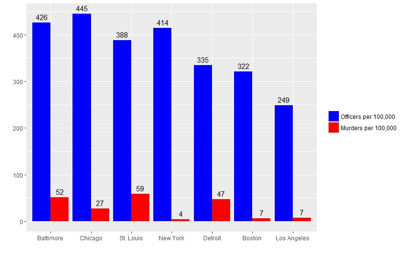

library(ggplot2)
library(readxl)
library(dplyr)
library(reshape2)
sworn_officers <- read_excel("Full_time_leo_by_state_by_city.xls")
# rename columns
names(sworn_officers)[c(1:6)] <- c('state', 'city', 'population', 'total_employees', 'officers', 'civilians')
# change columns to numeric to remove decimal places
sworn_officers$population <- as.numeric(as.character(sworn_officers$population))
sworn_officers$total_employees <- as.numeric(as.character(sworn_officers$total_employees))
sworn_officers$officers <- as.numeric(as.character(sworn_officers$officers))
sworn_officers$civilians <- as.numeric(as.character(sworn_officers$civilians))
# subset data for cities with pop > 500,000
sworn_officers_city <- subset(sworn_officers,
population > 500000)
# Delete Portland because they have no fucking data
sworn_officers_city <- sworn_officers_city[-c(22),]
# Delete State row, unnecessary and not complete
sworn_officers_city <- sworn_officers_city[, -c(1)]
# create new row for chicago # UPDATE LATER
sworn_officers_city <- rbind(sworn_officers_city,
"33" = c("Chicago", 2720546, 0, 12100, 0))
# add row for STL
sworn_officers_city <- rbind(sworn_officers_city,
"34" = c("St. Louis", 317095, 0, 1230, 0))
# change columns to numeric to remove decimal places
sworn_officers_city$population <- as.numeric(as.character(sworn_officers_city$population))
sworn_officers_city$total_employees <- as.numeric(as.character(sworn_officers_city$total_employees))
sworn_officers_city$officers <- as.numeric(as.character(sworn_officers_city$officers))
sworn_officers_city$civilians <- as.numeric(as.character(sworn_officers_city$civilians))
# calculate officer / population rate, PER 100,000 people
# x officers per 100,000 people
sworn_officers_city$officers_per_hthousand <- ((sworn_officers_city$officers / sworn_officers_city$population) * 100000)
# create column with city murder rates
sworn_officers_city$murders <- c(112, 31, 39, 282, 37, 53, 30, 53, 162,
97, 15, 148, 81, 344, 38, 295, 127, 352,
61, 77, 73, 280, 135, 72, 23, 136, 17,
56, 303, 94, 23, 145, 478, 188)
# create officer / murder rate
# x officers per murder
sworn_officers_city$officer_to_murder_rate <- (sworn_officers_city$officers / sworn_officers_city$murders)
# in 2014 chicago had 12,902 officers, FOIA'd 2015
#create murder per population per 100,000 rate
sworn_officers_city$murder_per_hthousand <- sworn_officers_city$murders / sworn_officers_city$population * 100000
#create subset of DF for target cities
subset_by_cities <- subset(sworn_officers_city, city %in% c("Chicago",
"New York", "Los Angeles", "Baltimore", "Detroit", "Boston", "St. Louis"))
subset_by_cities$murders_2016 <- c(293, 323, 45, 316, 336, 732, 188)
subset_by_cities$murder_per_hthousand_2016 <- subset_by_cities$murders_2016 / subset_by_cities$population * 100000
subset_by_cities_long <- melt(subset_by_cities, id = c("city" ,"population",
"total_employees", "officers", "civilians", "murders", "officer_to_murder_rate",
"murder_per_hthousand", "murders_2016"))
# plot for visualization and moving forward
graph <- ggplot(data = subset_by_cities, aes(officer_per_hthousand, murder_per_hthousand), label = city)
graph + geom_point() + geom_text(aes(label = city), hjust = .5, vjust = 0)
graph_bar <- ggplot(data = subset_by_cities_long, aes(x = reorder(city, -value), y = value),label = Frequency())
graph_bar + geom_bar(aes(fill = factor(variable)), stat = "identity", position = "dodge") +
scale_fill_manual(values=c("blue", "red"), name = " ",
breaks = c("officers_per_hthousand", "murder_per_hthousand_2016"),
labels = c("Officers per 100,000", "Murders per 100,000")) +
xlab("")+ylab("") +
geom_text(aes(fill = variable, label = sprintf("%0.0f", round(value, digits = 2))), vjust = -.5, position = position_dodge(0.9))
reg <- lm(murder_per_hthousand_2016 ~ officers_per_hthousand,
data = subset_by_cities)
summary(reg)
attach(subset_by_cities)
cor.test(murder_per_hthousand_2016, officers_per_hthousand)
detach(subset_by_cities)library(plyr)
library(dplyr)
library(readr)
library(tidyverse)
library(reshape)
library(ggplot2)
library(car)
library(gvlma) # gvlma test
library(lmtest) # lm test
library(data.table) #fread function to import/read only certain columns from csv
library(psych) # for describe function
library(pastecs) #for descriptive statistics table
library(scales)
##################################################### 911 ##################################################################################
# read complete 911 below
# reads all csvs in your wd and merges them into one dataframe
# merged911 <- list.files(pattern = "*.csv") %>%
# map_df(~read.csv(.))
# create a dataframe removing rows which dont have complete data
merged911new <- merged911[complete.cases(merged911), ]
# remove ward 0 rows from dataframe CALL OEMC AND FIGURE OUT WHERE WARD 0 BELONGS
merged911new <- merged911new[!(merged911new$Ward == '0'), ]
sort(unique(merged911new$Ward)) #yields 50 wards but theres a 0
# rename all columns
names(merged911new)[c(1:8)] <- c('id', 'entry_date', 'closed_date', 'type', 'disposition', 'police_district', 'ward', 'zip')
#### for analysis, sample the dataframe so its easier to run initial analysis ####
subset.merged911 <- merged911new[sample(nrow(merged911new), 0.001*nrow(merged911new)), ]
# viewing zip codes, police districts, and wards in order ... Which one to use?
sort(unique(subset.merged911$ward)) #yields 50 wards but theres a 0
sort(unique(subset.merged911$zip)) #yields 60 zip codes but theres a 0
sort(unique(subset.merged911$police_district)) #yeilds 31 police districts no 0
# make dataframe counting calls per ward
subset_ward_count <- data.frame(table(subset.merged911$ward))
names(subset_ward_count) <- c("ward_num", "ward_count") # re-name columns
# create a data frame matrix with a column for each event type by ward
subset_ward_event_count <- as.data.frame.matrix(table(subset.merged911$ward, subset.merged911$type))
# CBIND ward count and ward event count data frames for analysis
# Use Merge to merge 311, 911, and crime rate data frames to respective wards, merge by ward number
subset_complete_test_data <- cbind(subset_ward_count, subset_ward_event_count)
# summing the dataframe row 2, column 3 and after to confirm data merged correctly
sum(subset_complete_test_data[2,3:ncol(subset_complete_test_data)])
# just printing all entries to the merged 911 subset for ward 1
subset.merged911[subset.merged911$ward == 1,]
# 208 unique event types in 911 data
subset.merged911unique <- length(unique(subset.merged911$Event.Type))
print(subset.merged911unique)
# write file made from above
write.csv(merged911new, )
merged911 <- read.csv("merged911.csv")
# create the full data frame for 2016 911 calls
ward_911_count <- data.frame(table(merged911$ward))
names(ward_911_count) <- c("", "ward_911call_count")
# create a data frame matrix with a column for each event type by ward
ward_event <- as.data.frame.matrix(table(merged911$ward, merged911$type))
# create complete 911 by ward dataframe
complete_911_ward <- cbind(ward_911_count[2], ward_event)
write.csv(complete_911_ward, )
complete911 <- read.csv("complete_911_ward.csv")
############################################################ 2016 crimes ################################################################
crimes <- read.csv("2016_Crimes.csv")
crime_codes <- read.csv("ucr_crime_codes.csv")
# factor ucr codes to their respective categores:
# Violent: 'HOMICIDE', 'CRIMINAL SEXUAL ASSAULT', 'ROBBERY', 'AGGRAVATED_ASSAULT', 'AGGRAVATED_BATTERY'
# Property: 'BURGLARY', 'LARCENY', 'MOTOR_VEHICLE_THEFT', 'ARSON'
crimes$FBI.Code <- factor(crimes$FBI.Code,
levels = c('01A', '02', '03', '04A', '04B', '05', '06', '07', '09', '01B', '08A', '08B', '10', '11', '12', '13', '14', '15', '16', '17', '18', '19', '20', '22', '24', '26'),
labels = c('HOMICIDE', 'CRIMINAL SEXUAL ASSAULT', 'ROBBERY', 'AGGRAVATED_ASSAULT', 'AGGRAVATED_BATTERY', 'BURGLARY', 'LARCENY', 'MOTOR_VEHICLE_THEFT',
'ARSON', 'MANSLAUGHTER', 'SIMPLE_ASSAULT', 'SIMPLE_BATTERY', 'FORGERY_COUNTERFEITING', 'FRAUD', 'EMBEZZLEMENT',
'STOLEN_PROPERTY', 'VANDALISM', 'WEAPONS_VIOLATION', 'PROSTITUTION', 'CRIMINAL_SEXUAL_ABUSE', 'DRUG_ABUSE', 'GAMBLING',
'OFFENSES_AGAISNT_FAMILY', 'LIQUOR_LICENSE', 'DISORDERLY_CONDUCT', 'MISC'))
# make dataframe counting calls per ward
crime_ward_count <- data.frame(table(crimes$Ward))
names(crime_ward_count) <- c("", "ward_crime_count") # re-name column)
# create a data frame matrix with a column for each event type by ward
crime_event <- as.data.frame.matrix(table(crimes$Ward, crimes$FBI.Code))
# make df of all crime by ward
complete_crime_ward <- cbind(crime_ward_count[2], crime_event)
write.csv(complete_crime_ward, )
complete_crime_ward <- read.csv("complete_crime_ward.csv")
# make a dataframe of all 911 calls and all total crimes and all event types for each
# total_crime_911_calls <- cbind(complete911, complete_crime_ward)
# make df of just totals of crimes and calls by ward
# sum_crime_sum_911calls <- cbind(complete911_ward[1:2], complete_crime[2])
############################################################### 311 ########################################################################
# read all csv files in 311 folder
path <-
files <- list.files(path=path, pattern="*.csv")
for(file in files)
{ perpos <- which(strsplit(file, "")[[1]]==".")
assign(
gsub(" ","",substr(file, 1, perpos-1)),
read.csv(paste(path,file,sep="")))
}
# select the columns used for analysis
abandon_veh <- subset(abandon_veh, select = c(1, 2, 3, 4, 5, 16, 17))
all_streetlights <- subset(all_streetlights, select = c(1, 2, 3, 4, 5, 10, 11))
alley_lights <- subset(alley_lights, select = c(1, 2, 3, 4, 5, 10, 11))
garbage_carts <- subset(garbage_carts, select = c(1, 2, 3, 4, 5, 13, 14))
graffiti <- subset(graffiti, select = c(1, 2, 3, 4, 5, 12, 13))
potholes <- subset(potholes, select = c(1, 2, 3, 4, 5,13, 14))
rodent_bait <- subset(rodent_bait, select = c(1, 2, 3, 4, 5, 15, 16))
sanitation <- subset(sanitation, select = c(1, 2, 3, 4, 5, 11, 12))
single_streetlight <- subset(single_streetlight, select = c(1, 2, 3, 4, 5, 10, 11))
tree_debris <- subset(tree_debris, select = c(1, 2, 3, 4, 5, 13, 14))
tree_trims <- subset(tree_trims, select = c(1, 2, 3, 4, 5, 11, 12))
vacant_bldg <- subset(vacant_bldg, select = c(1, 2, 3, 18, 19))
# create two columns so vacant_bldg is identical to other 311 data frames
vacant_bldg$status <- NA
vacant_bldg$closed_date <- NA
# Rename selected columns for each dataframe to for merging
names(abandon_veh) <- c("entry_date", "status", "closed_date", "id", "type_service", "ward", "police_district")
names(all_streetlights) <- c("entry_date", "status", "closed_date", "id", "type_service", "ward", "police_district")
names(alley_lights) <- c("entry_date", "status", "closed_date", "id", "type_service","ward", "police_district")
names(garbage_carts) <- c("entry_date", "status", "closed_date", "id", "type_service","ward", "police_district")
names(graffiti) <- c("entry_date", "status", "closed_date", "id", "type_service","ward", "police_district")
names(potholes) <- c("entry_date", "status", "closed_date", "id", "type_service","ward", "police_district")
names(rodent_bait) <- c("entry_date", "status", "closed_date", "id", "type_service","ward", "police_district")
names(sanitation) <- c("entry_date", "status", "closed_date", "id", "type_service","ward", "police_district")
names(single_streetlight) <- c("entry_date", "status", "closed_date", "id", "type_service","ward", "police_district")
names(tree_debris) <- c("entry_date", "status", "closed_date", "id", "type_service","ward", "police_district")
names(tree_trims) <- c("entry_date", "status", "closed_date", "id", "type_service","ward", "police_district")
names(vacant_bldg) <- c("type_service","id", "entry_date", "ward", "police_district", "status", "closed_date")
# re-order vacant_building columns by their position indexes to match other dataframes
vacant_bldg <- vacant_bldg[c(3, 6, 7, 2, 1, 4, 5)]
# join 311 dataframes, using a full type join matching all rows
# added up all 311 values and it equals merge311 value
merged311 <- join_all(list(abandon_veh, all_streetlights, alley_lights, garbage_carts, graffiti, potholes, rodent_bait, sanitation,
single_streetlight, tree_debris, tree_trims, vacant_bldg), by = NULL, type = "full", match = "all")
# remove ward 0 rows from dataframe CALL OEMC AND FIGURE OUT WHERE WARD 0 BELONGS
merged311 <- merged311[!(merged311$ward == '0'), ]
# make dataframe counting calls per ward
ward_count_311 <- data.frame(table(merged311$ward))
names(ward_count_311) <- c("ward", "ward_311call_count") # re-name columns)
non_emerg_event <- as.data.frame.matrix(table(merged311$ward, merged311$type_service))
# df of total 311 calls by ward and by event type
complete_311_ward <- cbind(ward_count_311, non_emerg_event)
write.csv(complete_311_ward, )
complete311 <- read.csv("complete_311_ward.csv")
############################################# Create Master Doc #############################################################################
# import ward population dataset and select on population row
ward_population <- fread("ward_pop.csv", select = c(2))
# remove total city population row 51
ward_population <- ward_population[!(ward_population$pop10 == '2,695,598'),]
# transform pop10 column to numeric
ward_population <- transform(ward_population, pop10 = as.numeric(pop10))
write.csv(ward_population, )
ward_population <- read.csv("ward_population.csv")
# create master DF with ward population, 911 and 311 calls by ward and crimes by ward and all events
master <- cbind(ward_population, complete311, complete911, complete_crime_ward)
write.csv(master,)
########################################### Edit Master Doc #################################################################################
master <- read.csv("master.csv")
# remove 311 and 911 call event types from master
master_subset_crimes <- subset(master[, c(1, 2, 3, 16, 333:359)])
# sum 311 and 911 calls to make a total call column for DV
master_subset_crimes$total_311_911_call_count <- (master_subset_crimes$ward_311call_count + master_subset_crimes$ward_911call_count)
# transform call varaibles and crime rates to comparable rates per 100,000
master_subset_crimes$ward_311_call_rate <- (master_subset_crimes$ward_311call_count / master_subset_crimes$pop10) * 100000
master_subset_crimes$ward_911_call_rate <- (master_subset_crimes$ward_911call_count / master_subset_crimes$pop10) * 100000
master_subset_crimes$ward_total_call_rate <- (master_subset_crimes$total_311_911_call_count / master_subset_crimes$pop10) * 100000
master_subset_crimes$ward_crime_rate <- (master_subset_crimes$ward_crime_count / master_subset_crimes$pop10) * 100000
# transform crime event type variables UCR defined as Violent and property crimes
master_subset_crimes$HOMICIDE <- (master_subset_crimes$HOMICIDE / master_subset_crimes$pop10) * 100000
master_subset_crimes$CRIMINAL.SEXUAL.ASSAULT <- (master_subset_crimes$CRIMINAL.SEXUAL.ASSAULT / master_subset_crimes$pop10) * 100000
master_subset_crimes$ROBBERY <- (master_subset_crimes$ROBBERY / master_subset_crimes$pop10) * 100000
master_subset_crimes$AGGRAVATED_ASSAULT <- (master_subset_crimes$AGGRAVATED_ASSAULT / master_subset_crimes$pop10) * 100000
master_subset_crimes$AGGRAVATED_BATTERY <- (master_subset_crimes$AGGRAVATED_BATTERY / master_subset_crimes$pop10) * 100000
master_subset_crimes$BURGLARY <- (master_subset_crimes$BURGLARY / master_subset_crimes$pop10) * 100000
master_subset_crimes$LARCENY <- (master_subset_crimes$LARCENY / master_subset_crimes$pop10) * 100000
master_subset_crimes$MOTOR_VEHICLE_THEFT <- (master_subset_crimes$MOTOR_VEHICLE_THEFT / master_subset_crimes$pop10) * 100000
master_subset_crimes$ARSON <- (master_subset_crimes$ARSON / master_subset_crimes$pop10) * 100000
write.csv(master_subset_crimes, )
master_subset_crimes <- read.csv("master_subset_crimes.csv")
# attach master to the search list for stat.desc so I don't have to type master$ for each column... then detach it
attach(master_subset_crimes)
variables <- cbind(ward_311_count, ward_911call_count, total_ward_calls, ward_311_pop, ward_911_pop, ward_total_pop,
ward_calls_per_crime, ward_crime_rate, total_ward_calls_rate)
options(scipen = 100)
options(digits = 2)
stat.desc(variables, basic = F)
detach(master_subset_crimes)
# create master df of JUST total calls by ward for 911 and 311, total crimes by ward, and total population by ward
ward_calls_pop <- master[, c(1, 2, 3, 17, 335)]
write.csv(ward_calls_pop, )
ward_calls_pop <- read.csv("ward_calls_pop.csv")
# create 2 df with wards whose crime rates and total call rates are 1 standard deviation away from mean to encompass high and low wards
sd1_crimerate <- subset(master_subset_crimes, ward_crime_rate >= 15678.35 | ward_crime_rate <= 4469.33)
sd1_callrate <- subset(master_subset_crimes, ward_total_call_rate >= 301909.1 | ward_total_call_rate <= 89099.24)
################################################################## Visualization ############################################################
hist_total_calls <- ggplot(data = master_subset_crimes, aes(x = ward_total_call_rate))
hist_total_calls + geom_histogram(breaks = c(50000, 150000, 250000, 350000, 450000), col = "blue", fill = "gray") +
labs(title = "Chicago Total Ward Call Rate") + labs(x = "Total Call Rate") + scale_x_continuous(labels = comma)
hist_311_calls <- ggplot(data = master_subset_crimes, aes(x = ward_311_call_rate))
hist_311_calls + geom_histogram(breaks = c(), col = "blue", fill = "gray") + labs(title = "Chicago 311 Ward Call Rate") +
labs(x = "311 Call Rate") + scale_x_continuous(labels = comma)
hist_911_calls <- ggplot(data = master_subset_crimes, aes(x = ward_911_call_rate))
hist_911_calls + geom_histogram(breaks = c(), col = "blue", fill = "gray") + labs(title = "Chicago 911 Ward Call Rate") + labs(x = "911 Call Rate") +
scale_x_continuous(labels = comma)
hist_crime <- ggplot(data = master_subset_crimes, aes(x = ward_crime_rate))
hist_crime + geom_histogram(col = "blue", fill = "gray") +
labs(title = "Chicago Total Ward Crime Rate") + labs(x = "Total Crime Rate") + scale_x_continuous(labels = comma)
################################################################## Analysis #################################################################
describe(master_subset_crimes[c(32:36)])
# hypothesis 1: relationship between chicago total calls and crime rate
hyp1 <- lm(ward_total_call_rate ~ ward_crime_rate, data = master_subset_crimes)
summary(hyp1)
viz <- ggplot(data = master_subset_crimes, aes(x = ward_crime_rate, y = ward_total_call_rate)) + geom_point(shape = 1) +
geom_smooth(method = lm) + geom_text(aes(label = ward), hjust = 0, vjust = 0)
viz
# hypothesis 2: relationship between 311 calls and crime rate
hyp2 <- lm(ward_311_call_rate ~ ward_crime_rate, data = master_subset_crimes)
summary(hyp2)
#hypothesis 3: relationship between 911 calls and crime rate
hyp3 <- lm(ward_911_call_rate ~ ward_crime_rate, data = master_subset_crimes)
summary(hyp3)
#hypothesis 4, 5, 6: total, 311 and 911 calls by violent and property crime
# Violent: 'HOMICIDE', 'CRIMINAL SEXUAL ASSAULT', 'ROBBERY', 'AGGRAVATED_ASSAULT', 'AGGRAVATED_BATTERY'
# Property: 'BURGLARY', 'LARCENY', 'MOTOR_VEHICLE_THEFT', 'ARSON'
hyp4 <- lm(ward_total_call_rate ~ HOMICIDE + CRIMINAL.SEXUAL.ASSAULT + AGGRAVATED_BATTERY + AGGRAVATED_ASSAULT,
data = master_subset_crimes)
summary(hyp4)
hyp4_1 <- lm(ward_911_call_rate ~ HOMICIDE + CRIMINAL.SEXUAL.ASSAULT + AGGRAVATED_BATTERY + AGGRAVATED_ASSAULT, data = master_subset_crimes)
summary(hyp4_1)
hyp4_2 <- lm(ward_311_call_rate ~ HOMICIDE + CRIMINAL.SEXUAL.ASSAULT + AGGRAVATED_BATTERY + AGGRAVATED_ASSAULT, data = master_subset_crimes)
summary(hyp4_2)
hyp5 <- lm(ward_total_call_rate ~ BURGLARY + LARCENY + MOTOR_VEHICLE_THEFT + ARSON,
data = master_subset_crimes)
summary(hyp5)
hyp5_1 <- lm(ward_911_call_rate ~ BURGLARY + LARCENY + MOTOR_VEHICLE_THEFT + ARSON, data = master_subset_crimes)
summary(hyp5_1)
hyp5_2 <- lm(ward_311_call_rate ~ BURGLARY + LARCENY + MOTOR_VEHICLE_THEFT + ARSON, data = master_subset_crimes)
summary(hyp5_2)
hyp6 <- lm(ward_total_call_rate ~ HOMICIDE + CRIMINAL.SEXUAL.ASSAULT + AGGRAVATED_BATTERY + AGGRAVATED_ASSAULT +
BURGLARY + LARCENY + MOTOR_VEHICLE_THEFT + ARSON, data = master_subset_crimes)
summary(hyp6)
hyp6_1 <- lm(ward_911_call_rate ~ HOMICIDE + CRIMINAL.SEXUAL.ASSAULT + AGGRAVATED_BATTERY + AGGRAVATED_ASSAULT +
BURGLARY + LARCENY + MOTOR_VEHICLE_THEFT + ARSON, data = master_subset_crimes)
summary(hyp6_1)
hyp6_2 <- lm(ward_311_call_rate ~ HOMICIDE + CRIMINAL.SEXUAL.ASSAULT + AGGRAVATED_BATTERY + AGGRAVATED_ASSAULT +
BURGLARY + LARCENY + MOTOR_VEHICLE_THEFT + ARSON, data = master_subset_crimes)
summary(hyp6_2)
#hypothesis 7 and 8: total calls and crime rates which are 1 sd from mean
hyp7 <- lm(ward_total_call_rate ~ ward_crime_rate, data = sd1_crimerate)
summary(hyp7)
hyp8 <- lm(ward_total_call_rate ~ ward_crime_rate, data = sd1_callrate)
summary(hyp8)
# code used for linear regression assumptions
# par(mfrow = c(2, 2)) # changes plotting to produce 2 by 2 graphs for residuals
# plot() # plot lm test
# gvlma()
# bptest()
# mean(reg1$residuals) # check the mean of residuals for closeness to 0Website Coded in R by Kevin Magnan